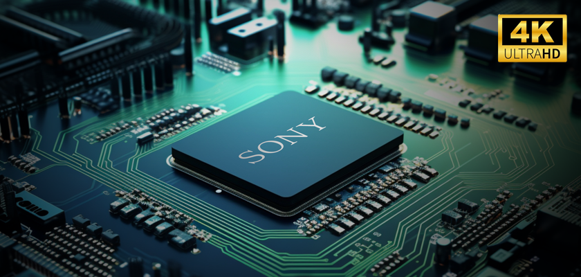
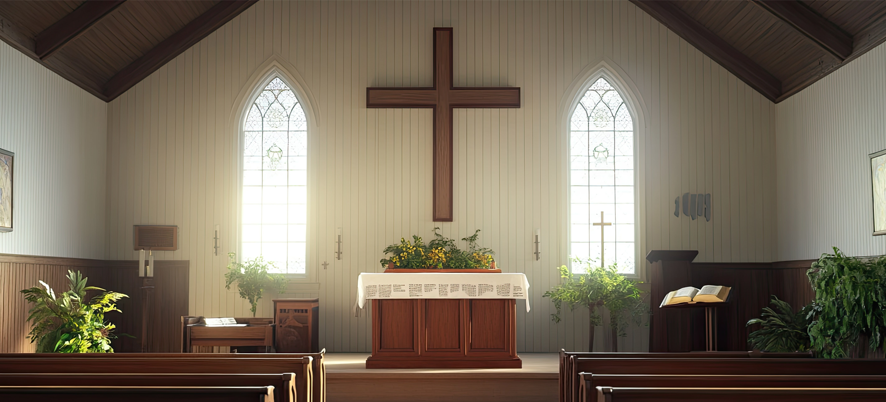
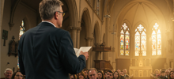

4K PTZ Camera
Professional
R9-420F
BOLIN R9-420F는 보다 전문적인 방송, 스튜디오 시스템 라이브 프로덕션으로 설계된 고성능 전문가용 PTZ 카메라입니다, 부드러운 움직임과 최적화된 화질을 위해 설계되었으며 초당 최대 60프레임의 4K 해상도를 제공하여 라이브 이벤트, 스포츠 중계, 기업 프로덕션, 스튜디오와 같은 환경에서 부드러운 영상 촬영을 보장합니다.Red Line 시리즈
고품질, 저지연성, 저대역폭 IP 스트림을 제공하여 원격 프로덕션, 클라우드 스트리밍 및 하이브리드 방송 애플리케이션에 적합합니다.-
R9-420F
- 1/2.8" 4K Sony Sensor
- 20X Zoom Range
- 4K60(2160p59.97)
- 12G-SDIㅣHDMIㅣIP
- FreeD Supported
-
R9-230H
- 1/1.8" Sony Sensor
- 30X Zoom Range
- Full HD (1080/i59.94/p60)
- 3G-SDI + HDMI + IP
- Super Image Stabilizer
-
R9-418F
- 1 Inch 4K Sony Sensor
- 18X Zoom Range
- 4K30(2160p29.97)
- 6G-SDI + HDMI + IP
- FreeD Supported


4K Sony Sensor

놀라운 화질
4K 해상도(3840x2160)로 선명하고 디테일한 영상을 제공하며, 829만의 유효화소수로 피사체의 미세한 표현이 가능합니다.
고배율, 광학 줌
광학 렌즈를 사용하여 피사체를 확대하여 촬영하는 방식으로, 디지털 줌과 달리 화질 저하 없이 고화질로 멀리 있는 대상을 촬영할 수 있는 기능입니다.

20x
1x
10x
10비트 색심도
기존 8비트 보다 높은 10비트 컬러를 지원하여 수치상 64배 높은 색표현으로 영상 컬러 표현의 계단현상 없이 깨끗한 영상으로 보실 수 있습니다. 8bit10bit
8bit10bit카메라의 위치와 설정 저장
프리셋 설정
팬, 틸트, 줌, 포커스, 아이리스 등을 조정하여 원하는 위치를 프리셋 버튼으로 각 번호에 저장
프리셋 호출
저장한 번호와 프리셋 호출 버튼을 눌러 저장된 위치와 설정을 호출하여 카메라를 이동합니다
프리셋 예시
 1
1 2
2- 3
 4
4

프리셋 장점
효율성 향상
미리 설정된 위치로 빠르게 이동하여 카메라 조작 시간을 단축할 수 있습니다.
정확한 촬영반복적인 촬영이나 특정 위치를 놓치지 않고 정확하게 촬영할 수 있습니다.
사용 편의성복잡한 조작 없이 버튼 하나로 원하는 위치를 촬영할 수 있어 편리합니다.
다양한 활용회의실, 강당, 감시 시스템 등 다양한 환경에서 유용하게 활용될 수 있습니다.
편리한 POE 기능
하나의 이더넷 케이블을 통해 컨트롤러 통신과 동시에 장치에 전력까지 공급할 수 있으며 별도의 전원 어댑터 없이 IP 카메라, 컨트롤러, POE 허브등 다양한 네트워크 장치를 설치하고 운영할 수 있어 편리합니다. 복잡한 배선 문제를 해결하고 설치 비용을 절감할 수 있습니다.
복잡한 배선 문제를 해결하고 설치 비용을 절감할 수 있습니다.
구성도
카메라를 원격으로 동시에 조작할 수 있어 1명의 인원과 1개의 컨틀롤러만으로 다수의 카메라를 최소인원으로 방송시스템 운영을 원할히 수행 할 수 있습니다. Block Diagram 예시
Block Diagram 예시
다양한 활용도
우수한 퀄리티로 영상 출력이 가능하여 다양한 환경에서 활용도가 높습니다, 4K 혹은 Full HD급의 높은 해상도로 최적의 방송 비디오 영상을 출력하거나 실시간 스트리밍 할 수 있습니다.Reference
 종교시설
종교시설 교육기관
교육기관 대회의실
대회의실 스튜디오
스튜디오
추가 설치 옵션
천장 혹은 벽이나 기둥 그리고 트라이포드(삼각대)등에 설치할 수 있는 옵션을 제공합니다.천장 설치
벽 설치
삼각대
기둥 설치
MODEL
Specifications
| Model | R9-420F |
| Image Sensor | SONY 1/2.8 Inch CMOS 8.29MP SONY의 정품 이미지 센서 탑재 |
| Resolution | 2160p (60, 59.94, 50, 30, 25, 24) 1080p (60, 59.94, 50, 30, 25, 24) 1080i (60, 59.94, 50) |
| Color Precision | HDMI : 12bit, YUV4:2:2, YUV4:2:0 SDI : 10bit, YUV4:2:2 |
| Zoom | 20x (Optical Lens) |
| Focal Length | f= 3.55 mm (WIDE) to 63.58 mm (TELE) |
| Aperture | F2.0 (Wide) to F3.8 (Tele) |
| HFOV | 78.59° (W)~4.92° (T) |
| Feature | Backlight CompensationㅣE-FLIP Day/NightFlickerㅣContrastㅣEffect |
| White Blance | AutoㅣIndoorㅣOutdoor OPWㅣATWㅣManual |
| P / T Move | PAN : +-340ㅣTILT :+-120 |
| Interface | 12G-SDIㅣHDMIㅣIP |
| Control | RS422ㅣIP ControlㅣIR Remote Control |
| Size | L201 x W253 x H249ㅣ3.8Kg |
| Power | 12V2A DCㅣ50W(max)ㅣPOE++ |
| Model | R9-230H |
| Image Sensor | 1/1.8인치 CMOS (4.17MP) SONY 이미지 센서 탑재 |
| Resolution | 1080p (60, 59.94, 50, 30, 25, 24) 1080i (60, 59.94, 50) |
| Color Precision | HDMI : 12bit, YUV4:2:2, YUV4:2:0 SDI : 10bit, YUV4:2:2 |
| Zoom | 광학 30배ㅣ디지털 12배줌 |
| Focal Length | f= 6.5 mm (WIDE) to 162.5 mm (TELE) |
| Aperture | F1.6 (Wide) to F4.8 (Tele), 16 steps |
| HFOV | 58.1˚ (Wide) - 2.3˚ (Tele) |
| Feature | High SensitivityㅣHLCㅣE-FLIP Backlight CompensationㅣDay/Night |
| White Blance | AutoㅣIndoorㅣOutdoor OPWㅣATWㅣManual |
| P / T Move | PAN : +-340ㅣTILT :+-120 |
| Interface | 3G-SDIㅣHDMIㅣIP |
| Control | RS422ㅣIP ControlㅣIR Remote Control |
| Size | L201 x W253 x H249ㅣ3.8Kg |
| Power | 12V2A DCㅣ40W(max)ㅣPOE++ |
| Model | R9-418F |
| Image Sensor | 1인치 Exmor R CMOS (14.2MP) SONY의 정품 이미지 센서 탑재 |
| Resolution | 2160p (30, 25, 24, 23.98) 1080p (60, 59.94, 50, 30, 25, 24) 1080i (60, 59.94, 50) |
| Color Precision | HDMI : 12bit, YUV4:2:2, YUV4:2:0 SDI : 10bit, YUV4:2:2 |
| Zoom | 4K 18배ㅣFull HD 24배줌 |
| Focal Length | f= 6.5 mm (WIDE) to 162.5 mm (TELE) |
| Aperture | F1.6 (Wide) to F4.8 (Tele), 16 steps |
| HFOV | 58.1˚ (Wide) - 2.3˚ (Tele) |
| Feature | High SensitivityㅣHLCㅣE-FLIP Backlight CompensationㅣDay/Night |
| White Blance | AutoㅣIndoorㅣOutdoor OPWㅣATWㅣManual |
| P / T Move | PAN : +-340ㅣTILT :+-120 |
| Interface | 6G-SDIㅣHDMIㅣIP |
| Control | RS422ㅣIP ControlㅣIR Remote Control |
| Size | L201 x W253 x H249ㅣ3.8Kg |
| Power | 12V2A DCㅣ50W(max)ㅣPOE++ |